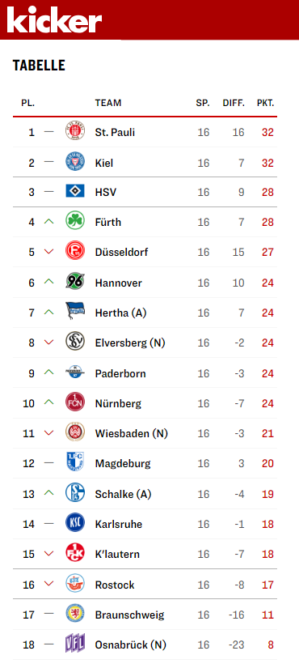

SVWW vs. Braunschweig @ 2023-12-08
Third defeat in a row, this time at home
 1:3
1:3

Our last home game of the year. The last two away games against Greuther Fürth and Holstein Kiel were unfortunately lost. One 2:0 and the other 3:2, so you could say that our good run had come to an end. But well … anyone who thought it would go on like this should have seen a doctor. After all, we’re the promoted team and we have to win against far stronger teams with far more Bundesliga experience. We can only ever catch them at a weak moment and hope that in the end it will be enough to stay in the 2. Bundesliga.
Eintracht Braunschweig was one of the teams we thought had a chance, as they were in a relegation spot with just 8 points before the matchday (we have 21) and hadn’t won an away game for months.
It’s already very cold in Wiesbaden at the beginning of December, especially as the weather was bringing in a lot of cold air from the north, so I left the scooter and took a cab to the Brita Arena. Freezing sucks and as I no longer have the heat of the youth, I bought long underwear for winter stadium visits. (Uhh, the old man wears long underpants). I was glad to have them though, because on the one hand I was there way too early and on the other hand you end up sitting for most of the 120 minutes that a game like this lasts, including waiting for kick-off and the interval. The hot cider and warm beef sausages only helped to combat the cold to a limited extent.
Bärbel did better, as she arrived shortly before kick-off, like most of the 7,200 spectators. We chatted a bit about trivialities and hoped that our boys wouldn’t let the opportunity pass them by today.
The Game
The coach seemed to have had something similar in mind, because as soon as the ball started rolling, our boys attacked their opponents and had their first 100% chance after just 20 seconds (!). A few minutes later, the ball was actually in the goal, but it was probably disallowed by the referee for offside or something similar. I don’t know but it didn’t matter as long as it continued at this pace. Braunschweig were hopelessly out of their depth and simply tried to prevent the inevitable … until the 18th minute … 1:0 - A fine header by our defender Aleksandar Vukotic :)
However, the problem was that our team then let themselves go a little and only benefited from the opponent’s harmlessness until the break. As if the job was already done…


Bärbel and I hoped that the coach in the dressing room would be able to shake the boys up again and they would play the second half with the same energy of the first 20 minutes. But what came was a bitter disappointment. Braunschweig’s coach seemed to have achieved exactly what we had hoped for. Our opponents came onto the pitch and started playing aggressive football. In the 48th minute, the score was 1:1 after a counterattack and only 8 minutes later, Braunschweig had turned the game around: 1:2.
The lack of resistance and insecurity on our side was problematic. Hardly a ball got to where it needed to go, hardly a duel was won and even 5 substitutions unfortunately did nothing to change this. The boys were somehow beside themselves and so Braunschweig put the game to bed in the 76th minute: 1:3 :|
Conclusion
The stadium has rarely emptied as quickly as it did this time, but that wasn’t just due to the cold, but also the disappointment. Unfortunately, it wasn’t a Christmas present from the players to their fans in the last home game of 2023. The team have to play one last away game next week at St. Pauli before the break, but nobody expects a win against the strongest team in the 2nd division at the moment.
No matter … we are in mid-table, which is more than we had hoped for at the start of the season. In 7 weeks time, we’ll be back in the Brita-Arena against Herta BSC and we’ll see better games again and stay in the league!
You can interact with this article (applause, criticism, whatever) by mention it in one of your posts or by replying to its syndication on Mastodon, which will be shown here as a Webmention ... or you leave a good old comment with your GitHub account.
In case your blog software can't send Webmentions, you can use this form:
Webmentions
No Webmentions yet...
Related

SV Wehen Wiesbaden


 There are many Mastodon instances out there.
Tell me yours and I will redirect you to the share dialog of your server:
There are many Mastodon instances out there.
Tell me yours and I will redirect you to the share dialog of your server:
Comments